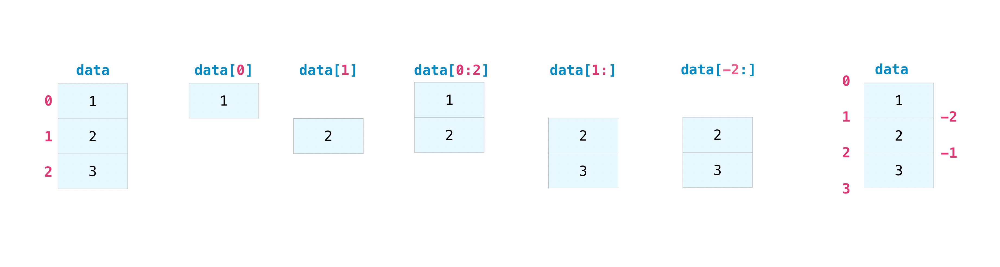
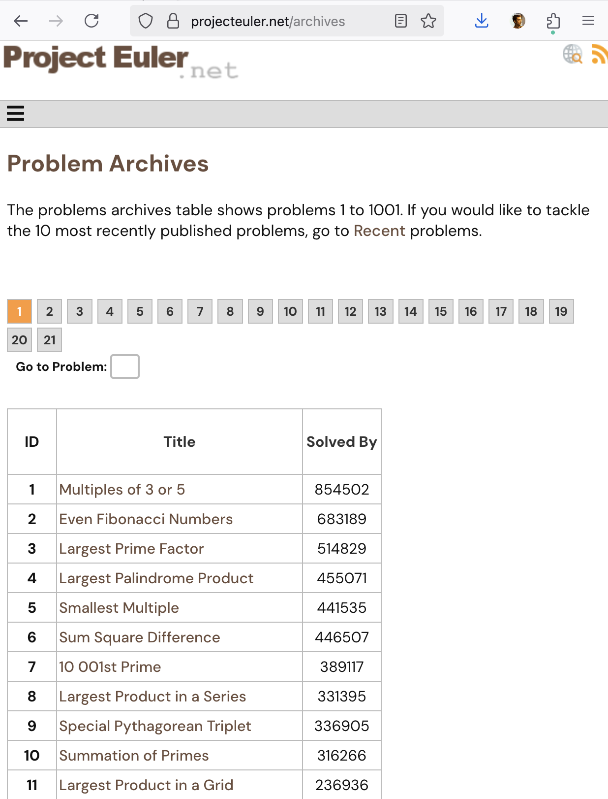

E21 Computer Engineering Fundamentals
October 1, 2026
numpyDownload the data file here and look at the official documentation here
Consists of 3 days of temperature data recorded at half-hour intervals. First time (hours), then temperature in F.
Reformat the data in the form of an N rows, 2 column numpy array.
Obtain shape of dataset
We find that the dataset is 290 entries long.
Reshape it into 2 x 145 set.
Transpose it to have 145 rows and 2 columns
Arrays in numpy can be initialized using:
ones
zeros
Random numbers
Tip
The type of an array can be changed using functions such as numpy.float64, numpy.int64, np.bool() etc.
It is often useful to generate random numbers.
numpy.random.random()numpy.random.random(3)numpy.random.random((3,2))n, not inclusive of n: numpy.random.randint(n)m and n, not inclusive of n: numpy.random.randint(m,n)numpy arraysnumpy array| 0.07 | 0.14 | 0.23 | 9.42 | 7.73 |
| 4.56 | 6.88 | 0.99 | 5.32 | 6.36 |
| 9.34 | 6.38 | 7.48 | 8.05 | 6.01 |
| 4.00 | 4.35 | 1.43 | 9.01 | 3.93 |
To select the third row:
‘Row number 2, All columns’
To select the fourth column:
‘All rows, column number 3’

example[0:5] is a subset of example with 5 elements starting from index 0.example[2:4] is a subset of example with 2 elements starting from index 2.Create an array containing only the second, fourth, and seventh element of this array.
[A list of integers can be used to access the nth elements of a numpy array.]
Obtain the following subsets by slicing the given array (no cherry-picking)
Logical indexing is a powerful feature of numpy (and MATLAB). In this approach, we index an array using booleans.
Example: Create an array containing only the values of example that are greater than 5.
Without logical indexing:
Manually pick out the second, third, last, and third-last elements.
With logical indexing:
Let Python select for you based on an array of boolean values.
To understand logical indexing, let’s look at example>5 when example is a numpy array.
| 1.81 | False | Exclude |
| 8.17 | True | Include |
| 6.93 | True | Include |
| 1.54 | False | Exclude |
| 0.39 | False | Exclude |
| 4.96 | False | Exclude |
| 2.66 | False | Exclude |
| 6.03 | True | Include |
| 4.85 | False | Exclude |
| 6.43 | True | Include |
Create an array whose elements contain all the elements of example that are smaller than 5 and whose units place is an even number.
numpynumpy’s logical indexing& for ‘and’: both of the two onditions apply| for ‘or’: any of the two conditions applyExample
c for which the difference between a and b is less than 2.import numpy as np
np.set_printoptions(precision=2)
a = np.array([4.58, 7.17, 8.89, 6.79, 1.58, 1.84, 6.85, 1.06, 6.37, 5.28])
b = np.array([4.72, 6.83, 3.01, 4.76, 0.23, 7.88, 3.04, 0.78, 7.99, 7.69])
c = np.array([49, 99, 34, 13, 33, 1, 56, 39, 83, 77])
print(a)
print(b)
for i in range(len(a)):
if abs(b[i] - a[i]) < 2:
print(f"The {i}th elements of a and b are within 3 of each other")This is incomplete and does not use logical indexing. Use logical indexing to accomplish this task.
a |
b |
c |
|---|---|---|
| 4.58 | 4.72 | 49.00 |
| 7.17 | 6.83 | 99.00 |
| 8.89 | 3.01 | 34.00 |
| 6.79 | 4.76 | 13.00 |
| 1.58 | 0.23 | 33.00 |
| 1.84 | 7.88 | 1.00 |
| 6.85 | 3.04 | 56.00 |
| 1.06 | 0.78 | 39.00 |
| 6.37 | 7.99 | 83.00 |
| 5.28 | 7.69 | 77.00 |
The numpy.flip() command reverses an array
Optional argument: numpy.flip(example, axis=1)
The reshape() command re-arranges data in an array:
Rearranges b into a matrix with 10 rows, 2 columns
The transpose command reverses the rows and columns of a 2-D matrix
numpy arraysArrays can be stacked vertically or horizontally.
Vertically:
array([[1, 1],
[2, 2],
[3, 3],
[4, 4]])Horizontally:
array([[1, 1, 3, 3],
[2, 2, 4, 4]])Task: What pairs of the following arrays can be hstack’ed and what pairs cannot be hstacked ? Do the same for vstack
Write a function that takes as input two numpy arrays (assumed to be 2-dimensional).
Your function should return a tuple of Booleans indicating:
hstack’edvstack’edHint: use numpy.shape()
numpyarange — works like range but returns an array.
arange(stop)arange(start,stop)arange(start,stop,step)range, does not include the last element!linspace — works like MATLAB’s linspace.
linspace(1,5) generates 50 numbers between 1 and 5 both inclusive.linspace(1,5,9) generates 9 numbers betwen 1 and 5 both inclusive.linspace)
arange, range, etc. and remove the endpoint, you can pass as an optional argument linspace(1,5,9,endpoint=Falselogspace — like linspace but on a log-log scale.numpy provides the functions max, min, mean, std, and sum.
Warning
Some of these have the same name as built-in Python functions. e.g., numpy.max() is different from max().
Use the documentation of these functions here and use numpy to:
Warning
These and many other numpy functions can be called either using the syntax a.mean() or using the syntax numpy.mean(a)
numpy may come in handy
matplotlibmatplotlib library from Thonny’s Tools > Manage Packages menuE21 • Fall 2026 • Lecture 10 • October 1, 2026 • ↩︎